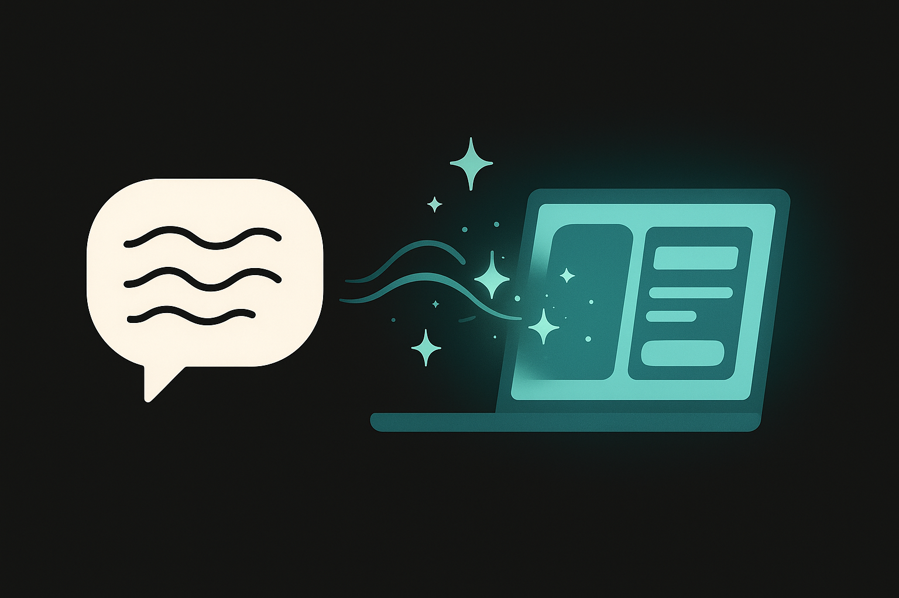

Course 10 / Layer 2 -- 技術特化
Vibe Coding入門 非エンジニアのためのアプリ開発
AIに自然言語で指示してアプリを作る新しい開発スタイル。コードが書けなくても、ビジネスアイデアを形にし、デプロイして公開し、ベンダーと対等に仕様を詰められる力を身につけます。作って終わりではなく、使われるアプリを届けるところまでを扱います。
初級 約10時間(600分) 9 Sections + 2 Review ハンズオン比率 67%
Section 01 -- 45min(講義25 + ハンズオン20)
Vibe Codingとは

Vibe Codingの定義
Vibe Codingとは、AIに自然言語で意図を伝え、コードを生成させて動くアプリを作る開発手法です。プログラミング言語の文法を覚える必要はありません。「こういうアプリが欲しい」と日本語で伝えれば、AIがコードを書いてくれます。
2025年にAndrej Karpathy氏(元Tesla AI責任者)が提唱し、瞬く間に広まりました。背景にはAIのコード生成能力の飛躍的向上があります。GPT-4oやClaude Opus 4.6は、簡単なWebアプリであれば一発で動くコードを出力できるレベルに達しています。
従来の開発との違い
%%{init:{'theme':'dark','themeVariables':{'primaryColor':'#00A5BF','primaryBorderColor':'#007A8F','primaryTextColor':'#e8e8e8','lineColor':'#00A5BF','secondaryColor':'#1a1a1a','background':'#141414','mainBkg':'#1a1a1a','nodeBorder':'#00A5BF'}}}%%
graph LR
subgraph 従来の開発
A1["プログラミング 従来型はコーディングスキルが前提。Vibe Codingは「伝える力」が鍵になる
従来の開発は、プログラミング言語を習得するだけで数ヶ月から数年。Vibe Codingではその学習コストがほぼゼロになります。代わりに求められるのは「自分が何を作りたいか」を明確に言葉にする力です。
ツール選択
Vibe Codingに使えるツールは複数あります。それぞれ特徴が異なるので、自分の目的と技術レベルに合ったものを選んでください。
ツール 操作方式 得意分野 料金(目安) 対象者
Cursor IDE型(エディタ内でAIと対話) 本格的なアプリ開発全般 無料枠あり / Pro $20/月 少しコードに触れたい人 Claude Code CLI型(ターミナルでAIと対話) ファイル横断の大規模修正 API従量課金 ターミナル操作に抵抗がない人 Codex 自律型(指示を出すと自動で完了) タスクの自動実行 API従量課金 開発経験がある人 Bolt.new Web型(ブラウザで完結) Webアプリの素早いプロトタイプ 無料枠あり / Pro $20/月 インストール不要で始めたい人 v0 Web型(UI特化) UIコンポーネント生成 無料枠あり 見た目重視のプロトタイプ
Webブラウザだけで完結するVibe Codingツール
CursorやClaude Codeはローカルにインストールが必要ですが、Bolt.newとv0はブラウザだけで完結します。PCの環境構築が不要なので、研修やプロトタイピングの初手として優れています。
StackBlitz社が提供するブラウザ完結型の開発環境。自然言語で指示するとReact/Next.jsプロジェクトを丸ごと生成し、プレビュー画面で即座に動作確認できます。ファイル構造、依存パッケージ、設定ファイルもすべて自動で構成されるため、環境構築で詰まることがありません。
無料枠: 1日のメッセージ数に上限あり
出力: React + Vite プロジェクト(そのままGitHubにエクスポート可)
適した用途: Webアプリのプロトタイプ、ダッシュボード、管理画面
Vercel社が提供するUI生成特化ツール。「こんな画面が欲しい」と伝えると、shadcn/ui + Tailwind CSSベースのUIコンポーネントを生成します。アプリ全体ではなくUIパーツの生成に特化しているのがBolt.newとの違い。
無料枠: 1日10回程度の生成
出力: React/Next.jsコンポーネント(コピーして自分のプロジェクトに貼付可)
適した用途: ランディングページ、フォーム、カード、テーブルなどUIパーツ
Tips: 迷ったらBolt.newから
インストール不要でブラウザだけで始められるBolt.newが最も手軽です。ある程度慣れてきたらCursorに移行すると、より高度な開発が可能になります。
「コードが読めなくても使える」は本当か
半分本当、半分ウソです。簡単なアプリならコードを一切読まずに完成できます。AIが生成したコードをそのまま動かして、動作を確認し、気に入らない部分を日本語で修正指示するだけで回ります。
ただし、AIが間違ったコードを出すこともあります。その場合、エラーメッセージを読んでAIに伝える、あるいは「何が起きているか」を説明する必要が出てきます。コードの文法を知らなくてもいいけれど、「確認する目」と「修正指示を出す力」は求められます。
注意: AIは万能ではない
AIが生成したコードにはバグが混じることがあります。動作確認は必ず行ってください。「AIが作ったから大丈夫」と思い込むのは危険です。
ハンズオン: 環境構築とHello World 20min
目標: Vibe Codingツールをセットアップし、AIにアプリを作らせる体験を最初の一歩として踏む
パート1: ツールの準備(5min)
以下のどちらかを選んでセットアップしてください。
Cursor(推奨) -- cursor.com からダウンロード、インストール。起動後にSign Upでアカウント作成Bolt.new(インストール不要) -- bolt.new にアクセスしてGitHubアカウントでログイン
パート2: AIモデルの設定(5min)
Cursorの場合: Settings > Models から Claude Sonnet 4 または GPT-4o を有効にしてください。
Bolt.newの場合: 画面上部のモデル選択から Claude Sonnet 4 を選んでください。
パート3: Hello World(10min)
AIに以下の指示を送って、最初のページを生成してみましょう。
シンプルなWebページを作ってください。
- 中央に「Hello, Vibe Coding!」と大きく表示
- その下に現在の日時をリアルタイムで表示
- 背景はグラデーション(青から紫)
- フォントはゴシック体で読みやすくコピー
生成されたページがブラウザで表示されることを確認してください
表示された内容を確認し、「テキストの色を白に変えて」「フォントサイズをもう少し大きくして」など、修正指示を出してみてください
うまくいかない場合
Cursorの場合: Ctrl+L(Mac: Cmd+L)でチャットパネルを開き、指示を入力。生成されたファイルを右クリック > Open in Browser で確認できます。
Bolt.newの場合: 右側のプレビューパネルに自動表示されます。表示されない場合はブラウザをリロードしてください。
Section 02 -- 50min(講義15 + ハンズオン35)
はじめてのアプリ
最初の成功体験がすべてを決める
Vibe Codingで最も大切なのは「動いた!」という体験です。複雑なものを狙う必要はありません。シンプルだけど実用的なアプリを一つ完成させること。その達成感が次への推進力になります。
なぜメモ帳アプリなのか
メモ帳アプリはシンプルに見えて、アプリの基本要素をすべて含んでいます。
入力 -- テキストを書く(フォーム処理)保存 -- データを記憶する(データ永続化)表示 -- 保存した内容を見る(一覧表示)削除 -- 不要なデータを消す(データ操作)
この4つは、どんな業務アプリでも共通する基本動作です。メモ帳で学んだパターンは、顧客管理ツールにも在庫管理ツールにもそのまま応用できます。
AIへの最初の指示の書き方
初手の指示は「具体的に、でも細かすぎない」がコツです。AIに余白を残しつつ、方向性は明確に伝えます。
良い指示 メモの追加、一覧表示、削除ができるシンプルなメモ帳Webアプリを作ってください。日本語UIで、見た目はシンプルで清潔感のあるデザインにしてください。
悪い指示 メモ帳を作って。
-- 「何ができるメモ帳か」が不明。AIが勝手に判断してしまい、意図と違うものが出てくる可能性が高い。
ハンズオン: メモ帳アプリをゼロから生成 35min
目標: AIへの指示だけでメモ帳アプリを作り、段階的に機能を追加する体験を得る
ステップ1: 基本のメモ帳を生成(10min)
以下のプロンプトをAIに送ってください。
メモの追加、一覧表示、削除ができるシンプルなメモ帳Webアプリを作ってください。
要件:
- HTMLファイル1つで完結(HTML + CSS + JavaScript)
- メモのタイトルと本文を入力できる
- 保存したメモが一覧で表示される
- 各メモに削除ボタンがある
- 日本語UIで、清潔感のあるデザイン
- データはlocalStorageに保存(ブラウザを閉じても消えない)コピー
生成されたファイルをブラウザで開き、メモの追加と削除が動作することを確認してください。
ステップ2: 修正と改善(10min)
動作を確認したら、以下のような修正指示を順番に出してみましょう。
以下の改善をお願いします:
1. 各メモにタイムスタンプ(作成日時)を表示してください
2. メモの並び順を新しい順にしてください
3. メモが0件のときに「メモがありません」と表示してくださいコピー
ステップ3: 機能追加(10min)
基本機能が動いたら、もう一歩進んだ機能を追加してみます。
以下の機能を追加してください:
1. メモの検索機能(タイトルと本文を対象に、リアルタイムでフィルタリング)
2. カテゴリ分け(仕事・プライベート・アイデアの3種類から選択)
3. カテゴリごとにフィルタリングできるボタンコピー
ステップ4: 動作確認(5min)
メモを5件以上追加し、検索が正しく動くか確認してください
カテゴリを切り替えてフィルタリングを試してください
ブラウザを閉じて再度開き、データが保持されているか確認してください
うまくいかない場合のトラブルシューティング
localStorageにデータが保存されない場合: ブラウザの開発者ツール(F12)を開き、Consoleタブにエラーメッセージが出ていないか確認してください。そのエラーメッセージをそのままAIに貼り付けて「このエラーを修正してください」と伝えると、AIが修正してくれます。
Section 03 -- 55min(講義25 + ハンズオン30)
要件の言語化
AIの出力品質は入力の品質で決まる
Vibe Codingの成果を左右するのは、AIのモデル性能ではなく「あなたが何を伝えるか」です。曖昧な指示からは曖昧なアプリが生まれ、具体的な指示からは具体的なアプリが生まれます。
これはプロのエンジニアに開発を依頼する場合と同じです。「いい感じのアプリ作って」では誰も動けません。要件定義、つまり「何をどう作るか」の言語化は、Vibe Codingにおいて最も重要なスキルになります。
要件定義テンプレート: 5つの要素
アプリを作る前に、以下の5つを整理してください。これだけで、AIへの指示精度が格段に上がります。
要素 問いかけ 記入例
1. 目的 このアプリで何を解決するか? 営業日報の入力・集計作業を半自動化し、週3時間の工数を削減する 2. ユーザー 誰が使うか? 営業部の10名。ITリテラシーは平均的。スマホでも使いたい 3. 機能一覧 何ができるか?(優先度付き) 必須: 日報入力、一覧表示、CSV出力。あれば嬉しい: グラフ表示、Slack通知 4. 画面構成 どんな画面があるか? ログイン画面、日報入力画面、日報一覧画面、集計ダッシュボード 5. 制約 技術・デザイン・セキュリティの制約は? 社内ネットワークのみで使用。データは外部に送らない。社のブランドカラーは青
良い要件 vs 悪い要件
良い要件の例
目的が具体的(数値目標がある)
ユーザーの属性が明確
機能に優先度がついている
画面遷移をイメージできる
制約条件が明記されている
悪い要件の例
「便利なツールが欲しい」(何が便利?)
「みんなが使える」(みんなって誰?)
「全部入り」(優先度不明)
「いい感じの画面で」(何がいい感じ?)
制約の記載なし(後から問題発生)
AIへの指示で避けるべきNGワード
NGワード なぜダメか 具体的に言い換えると
「いい感じにして」 AIにとって「いい感じ」の定義が不明。出力がランダムになる 「余白を20px確保し、カードに影(box-shadow)をつけてください」 「適当に作って」 手抜きして良いと解釈される可能性がある 「最小限の機能(CRUD)で動くプロトタイプを作ってください」 「普通のデザインで」 「普通」は人によって異なる。基準が曖昧 「白背景、ゴシック体、左寄せレイアウト、青のアクセントカラー(#2563EB)」 「かっこよく」 主観的すぎて何も伝わらない 「ダークテーマ、角丸8px、グラデーション背景(紺→黒)」 「あとはお任せ」 AIが自己判断した部分は後から修正指示が必要になる 決められない項目を列挙して「A案とB案を両方出してください」
要するに、形容詞(いい、普通、かっこいい)ではなく数値と固有名詞で伝える。色はHEXコード、サイズはpx、レイアウトは具体的なパターン名で指定するだけで出力品質が変わります。
AIに要件を整理してもらう
アイデアが漠然としている段階でも大丈夫です。ぼんやりしたアイデアをAIに投げて、要件定義の形に整理してもらう方法があります。
以下のアイデアを要件定義に整理してください。5つの観点(目的、ユーザー、機能一覧(優先度付き)、画面構成、制約)で構造化してください。
アイデア: 社内の会議室予約がいつもダブルブッキングになるので、空き状況がひと目でわかる予約ツールが欲しい。コピー
%%{init:{'theme':'dark','themeVariables':{'primaryColor':'#00A5BF','primaryBorderColor':'#007A8F','primaryTextColor':'#e8e8e8','lineColor':'#00A5BF','secondaryColor':'#1a1a1a','background':'#141414','mainBkg':'#1a1a1a','nodeBorder':'#00A5BF'}}}%%
graph LR
A["ぼんやりした アイデアから要件定義、そしてアプリ生成までの変換フロー
ハンズオン: 要件定義を作成する 30min
目標: 自分のアイデアを要件定義テンプレートで整理し、AIにレビューさせて改善する
ステップ1: テンプレートに記入(15min)
上のボタンからテンプレートをダウンロードしてください
自分が普段の業務で「こんなツールがあれば便利なのに」と思うものを1つ選んでください
テンプレートの5要素を埋めてください。完璧でなくて構いません。空欄があっても大丈夫です
アイデアが浮かばない方へ: 業務ツールの候補5つ
経費精算の入力・承認ツール
チームの週次進捗報告フォーム
社内FAQの検索ツール
お客様アンケートの集計ダッシュボード
在庫数の入出庫記録ツール
ステップ2: AIにレビューを依頼(10min)
記入した要件定義をAIに渡して、改善点を指摘してもらいます。
以下の要件定義をレビューしてください。抜け漏れ、曖昧な箇所、追加すべき観点を指摘してください。
---
(ここに記入した要件定義を貼り付け)
---コピー
ステップ3: 改善して完成(5min)
AIの指摘を踏まえて要件定義を修正し、最終版を保存してください。この要件定義はSec04以降のハンズオンで使います。
復習A -- 25min
要件書からアプリ生成の一連フロー
Sec01-03で学んだ内容を一気通貫で実践します。要件定義からAIへの指示、アプリ生成、動作確認までを一連の流れとして体験してください。
復習ハンズオン 25min
目標: Sec03で作成した要件定義を使い、AIにアプリを生成させて動作確認まで完了する
Sec03で作成した要件定義をAIに渡し、「この要件でWebアプリを作ってください。HTMLファイル1つで完結させてください」と指示(10min)
生成されたアプリの動作を確認。要件定義の機能一覧と照合(5min)
不足している機能や気になる点を修正指示として伝える(5min)
最終的な動作確認とスクリーンショット保存(5min)
要件定義の5要素がすべて埋まっている
AIにアプリ生成を指示できた
生成されたアプリがブラウザで動作した
修正指示を1回以上出してアプリを改善した
Section 04 -- 55min(講義15 + ハンズオン40)
HTMLプロトタイプ生成
なぜHTMLプロトタイプなのか
HTMLファイルはブラウザさえあれば誰でも開けます。特別なソフトのインストールは不要。メールに添付して送れば上司も同僚もすぐに触れます。
FigmaやAdobe XDのような専用デザインツールと違い、HTMLプロトタイプは実際に「動く」のが強みです。ボタンを押したら画面が切り替わる、フォームに入力したらデータが表示される。こうしたインタラクション(ユーザーの操作に対する反応)まで再現できるため、完成イメージの共有精度が格段に上がります。
プロトタイプの3段階
レベル 内容 用途 所要時間(AI利用)
Level 1: ワイヤーフレーム 灰色の箱と線だけの配置図 画面構成の合意 5分 Level 2: ビジュアルモック 色・フォント・画像を含む見た目 デザイン方向性の確認 15分 Level 3: インタラクティブ ボタン操作やデータ表示が動く 実際の使用感テスト 30分
効果的なプロンプトの書き方
プロトタイプ生成時は、画面のレイアウト構造を具体的に伝えるのが効きます。「管理画面を作って」ではなく、どこに何を配置するかを指示します。
ハンズオン: 業務ツールのプロトタイプを作成 40min
目標: 3種類の業務ツールプロトタイプを生成し、プロンプトの書き方の違いによる出力差を体感する
課題1: ダッシュボード型管理画面(15min)
業務管理ダッシュボードのHTMLプロトタイプを作ってください。1ファイルで完結。
レイアウト:
- 左サイドバー(幅240px): ロゴ、ナビゲーションメニュー(ダッシュボード/案件一覧/レポート/設定)
- 右メインエリア:
- 上部に4つのKPIカード(今月の売上/新規案件数/対応中/完了数)を横並び
- 中央に案件の一覧テーブル(案件名/担当者/ステータス/期限)
- テーブルにはサンプルデータを5行入れてください
デザイン:
- 白背景ベース、アクセントカラーは青(#2563eb)
- 日本語UI
- レスポンシブ不要(PC表示のみで可)コピー
課題2: フォーム + 一覧表示の業務ツール(15min)
経費精算ツールのHTMLプロトタイプを作ってください。1ファイルで完結。
画面構成:
- 上部: 経費入力フォーム
- 日付(date input)
- カテゴリ(交通費/宿泊費/飲食費/その他からプルダウン選択)
- 金額(数値入力)
- メモ(テキスト入力)
- 登録ボタン
- 下部: 登録済み経費の一覧テーブル
- 合計金額を表示
- 各行に削除ボタン
- データはlocalStorageに保存
デザイン:
- シンプルで清潔感のあるデザイン
- 日本語UIコピー
課題3: レスポンシブ対応の指示(10min)
課題1または課題2で作ったプロトタイプに、以下の修正指示を出してください。
このアプリをレスポンシブ対応にしてください。
- PC(1024px以上): 現在のレイアウトを維持
- タブレット(768px-1023px): サイドバーを折りたたみ式に
- スマホ(767px以下): 1カラムレイアウト、KPIカードは2x2グリッド
ブラウザの幅を変えて確認できるようにしてください。コピー
業務ツール別プロンプト雛形(追加3種)
勤怠管理ツール: 出勤/退勤ボタン、今月の勤務時間一覧、残業時間の自動計算
タスク管理ボード: カンバン形式(未着手/進行中/完了の3列)、カードのドラッグ&ドロップ
顧客管理ツール: 顧客情報の登録フォーム、検索・フィルタリング、対応履歴の記録
Section 05 -- 55min(講義20 + ハンズオン35)
フロントエンド強化
デザイン指示の語彙を持つ
AIに「きれいにして」と言っても、AIは困ります。何をもって「きれい」とするかは人それぞれだからです。デザインの指示には具体的な語彙が必要です。
要素 曖昧な指示 具体的な指示
色 いい感じの色で メインカラーは#2563eb(青)、背景は#f8fafc(薄いグレー) フォント 読みやすく 本文は16px、見出しは24pxで太字、行間は1.6 余白 もう少しスッキリ カード間の余白を24px、カード内の余白を16pxに 角丸 やわらかい雰囲気で ボタンとカードの角丸を8pxに 影 立体感を出して カードにbox-shadow: 0 2px 8px rgba(0,0,0,0.1)を追加 レイアウト 並べて 3カラムグリッド、各カラム幅均等、gap 20px
CSSフレームワークの活用
CSSフレームワークとは、よく使うデザインパーツ(ボタン、カード、テーブルなど)をあらかじめ用意してくれるツールキットです。AIに「Tailwind CSSで作って」と一言添えるだけで、プロのWebデザイナーが作ったような見た目になります。
Tailwind CSS -- クラス名でスタイルを指定する方式。自由度が高く、現在最も人気shadcn/ui -- Tailwindベースの美しいUIコンポーネント集。ダッシュボードやフォームに最適
レスポンシブ対応とダークモード
レスポンシブ対応とは、画面の幅に応じてレイアウトが自動調整される仕組みです。PCでは3カラム、スマホでは1カラムといった切り替えをCSSで実現します。
ダークモードは、背景を暗く文字を明るくする表示モード。目の疲れを軽減し、バッテリー消費も抑えます。AIに「ダークモード対応もお願いします」と伝えるだけで、切り替えスイッチ付きのアプリが生成されます。
ハンズオン: デザイン改善 35min
目標: 既存のプロトタイプのデザインを、具体的な指示で段階的に改善する
ステップ1: 色とフォントの変更(10min)
Sec04で作ったプロトタイプに以下の指示を出してください。
以下のデザイン変更をお願いします:
1. メインカラーを #1e40af (濃い青) に変更
2. 背景色を #f1f5f9 (薄いグレー) に変更
3. 本文フォントサイズを 15px、行間を 1.7 に設定
4. 見出しのフォントウェイトを 700(太字) に変更
5. テーブルのヘッダー行に背景色 #e2e8f0 を追加コピー
ステップ2: レイアウト改善(10min)
レイアウトを改善してください:
1. カードとカードの間に余白を 20px 確保
2. カード内の余白(padding)を 20px に統一
3. カードの角丸を 12px に設定
4. カードに薄い影をつける (box-shadow: 0 1px 3px rgba(0,0,0,0.08))
5. ボタンに hover 時の色変化アニメーション(0.2秒)を追加コピー
ステップ3: Tailwind CSSでリデザイン(15min)
このアプリ全体をTailwind CSS (CDN版) でリデザインしてください。
要件:
- Tailwind CDNをHTMLのheadで読み込み
- 既存のインラインCSSやstyleタグをすべてTailwindのクラスに置き換え
- ダークモード対応(切り替えトグルスイッチ付き)
- レスポンシブ対応(sm/md/lgブレークポイント)
- フォントは「Inter」(Google Fonts)を使用コピー
復習B -- 30min
見栄えの良いプロトタイプを完成
Sec04-05で学んだプロトタイプ生成とデザイン改善を組み合わせ、人に見せられるクオリティのプロトタイプを仕上げます。
復習ハンズオン 30min
目標: Sec03の要件定義に基づくアプリを、Tailwind CSS + レスポンシブ対応で完成させる
Sec03の要件定義をベースに、プロトタイプを新規生成(または復習Aで作ったものを改良)(10min)
デザイン指示チートシートを参照し、色・フォント・レイアウトを改善(10min)
レスポンシブ対応とダークモード対応を追加(10min)
Tailwind CSSまたは明示的なCSS指定でスタイリングされている
PC・スマホの両方で表示が崩れない
ボタンやフォームが動作する
デザインの統一感がある(色、フォント、余白が揃っている)
Section 06 -- 65min(講義25 + ハンズオン40)
データベース連携
なぜデータベースが必要なのか
Sec02で作ったメモ帳アプリはlocalStorageにデータを保存していました。これはブラウザ内の保存領域で、同じPCの同じブラウザでしかデータにアクセスできません。別のPCからは見えないし、ブラウザのデータを消去すると消えてしまいます。
データベース(DB)を使うと、どの端末からでもデータにアクセスでき、データが安全に保管されます。複数人で同じデータを共有することも可能になります。
選択肢の比較
方式 難易度 特徴 適した場面
localStorage 最も簡単 ブラウザ内に保存。サーバー不要。容量5MB程度 個人用ツール、プロトタイプ SQLite やや簡単 ファイル1つのデータベース。サーバー不要 ローカルアプリ、デスクトップツール Supabase 中程度 クラウド上のPostgreSQLデータベース。GUI管理画面付き チームで使うWebアプリ(推奨) Firebase 中程度 Google提供のクラウドDB。リアルタイム同期が得意 チャット、リアルタイム更新が必要な場面
Tips: 非エンジニアにはSupabaseを推奨
Supabaseはブラウザ上の管理画面でテーブル(データの表)を作成でき、データの中身も直接確認できます。SQLの知識がなくても使えるGUI(画面操作)が充実しており、無料プランで十分に始められます。
localStorageとSupabaseの比較
比較項目 localStorage Supabase
永続性 ブラウザのデータ消去で消える。PCが壊れたら終わり クラウドに保存されるため、端末が壊れてもデータは残る 容量 約5MB(ブラウザ依存)。画像は保存不可 無料枠で500MBのDB + 1GBのファイルストレージ 検索性 キーでの完全一致のみ。「タイトルに"会議"を含むメモ」のような検索はできない SQLクエリで柔軟な検索が可能。部分一致、日付範囲、ソートすべて対応 マルチデバイス 同じPCの同じブラウザでしか見えない PC、スマホ、タブレットどこからでも同じデータにアクセスできる 複数人利用 不可能。各ブラウザにデータが閉じている 可能。同じDBをチーム全員で共有できる
Supabaseアカウント作成手順(5ステップ)
supabase.com にアクセスし、「Start your project」をクリック。GitHubアカウントでサインアップするのが最も手軽ですダッシュボードが表示されたら「New Project」をクリック。Organization(組織)の選択画面が出た場合は、自分の名前のOrganizationを選んでください
プロジェクト設定を入力します。Name(例: my-memo-app)、Database Password(メモ必須。後から確認できません)、Region(Northeast Asia / Tokyo を選択)
プロジェクト作成完了後、左メニューの「Table Editor」からテーブルを作成。「New Table」をクリックし、テーブル名とカラムを定義します
「Settings」>「API」ページで Project URL と anon key をコピー。この2つをアプリのコードに設定すればSupabaseに接続できます
CRUDとは
アプリがデータに対して行う操作は、突き詰めると4種類に集約されます。頭文字を取って「CRUD(クラッド)」と呼びます。
Create(作成) -- 新しいデータを追加する。メモ帳なら「新しいメモを書く」Read(読取) -- データを表示する。メモ帳なら「メモ一覧を見る」Update(更新) -- 既存データを変更する。メモ帳なら「メモを編集する」Delete(削除) -- データを消す。メモ帳なら「メモを削除する」
世の中のほぼすべての業務アプリは、このCRUDの組み合わせで動いています。ECサイトの商品登録も、社内の勤怠管理も、根っこは同じ構造です。
ハンズオン: データベース連携 40min
目標: localStorageからSupabaseへの移行を体験し、クラウドDBの利便性を実感する
ステップ1: localStorageで永続化(10min)
まだlocalStorageを使っていないアプリがあれば、以下の指示で永続化を追加してください。
このアプリのデータをlocalStorageに保存するようにしてください。
要件:
- データの追加・削除時に自動でlocalStorageに保存
- ページ読み込み時にlocalStorageからデータを復元
- localStorageのキー名は「app_data」にしてくださいコピー
ステップ2: Supabaseアカウント作成 + テーブル設計(15min)
supabase.com にアクセスし、GitHubアカウントでSign Up「New Project」をクリックし、プロジェクト名(例: my-first-app)とデータベースパスワードを設定
プロジェクトが作成されたら、左メニューの「Table Editor」をクリック
「New Table」でテーブルを作成。例:
テーブル名: memos
カラム: id(int8, Primary Key, auto increment), title(text), content(text), category(text), created_at(timestamptz, default: now())
Settings > API からProject URLとanon keyをメモしてください(後で使います)
ステップ3: アプリとSupabaseの接続(15min)
このメモ帳アプリのデータ保存先をlocalStorageからSupabaseに変更してください。
Supabase情報:
- Project URL: (ここにProject URLを貼り付け)
- anon key: (ここにanon keyを貼り付け)
- テーブル名: memos
- カラム: id, title, content, category, created_at
要件:
- supabase-jsをCDNで読み込み
- CRUD操作(追加/一覧取得/削除)をSupabase APIに接続
- エラー時はコンソールにエラー内容を表示コピー
注意: APIキーの取り扱い
Supabaseのanon keyはフロントエンドに含めても構いませんが、service_role keyは絶対に公開しないでください。service_role keyはサーバー側専用で、漏えいするとデータベースの全データにアクセスされる危険があります。
Section 07 -- 50min(講義20 + ハンズオン30)
デプロイ
デプロイとは
デプロイとは、自分のパソコンで動いているアプリをインターネット上に公開し、URLでアクセスできるようにすることです。「deploy」は英語で「配置する、展開する」の意味。作ったアプリを世界中からアクセスできる場所に置く作業と考えてください。
無料デプロイ先の比較
サービス 無料枠 カスタムドメイン ビルド対応 特徴
Vercel 月100GB帯域 対応 Next.js, React, Vue等 最も簡単。GitHubと連携するだけ Netlify 月100GB帯域 対応 多数対応 フォーム処理や認証機能内蔵 GitHub Pages 無制限(静的のみ) 対応 静的ファイルのみ HTMLファイルをそのまま公開可 Cloudflare Pages 月500ビルド 対応 多数対応 CDN(世界中の配信サーバー)が速い
Tips: 迷ったらVercel
Vercelは操作画面がシンプルで、GitHubリポジトリと連携するだけでデプロイが完了します。コードを更新してGitHubにプッシュすると自動的に再デプロイされる仕組みも備わっています。
Vercelでのデプロイ手順(5ステップ)
Vercelアカウント作成 -- vercel.com で「Sign Up」をクリック。「Continue with GitHub」を選ぶとGitHubアカウントで即ログインできますGitHubリポジトリ連携 -- ダッシュボードの「Add New Project」> 「Import Git Repository」で、デプロイしたいリポジトリを選択。初回はGitHubへのアクセス許可が必要ですビルド設定 -- HTMLファイルだけのプロジェクトなら設定不要(Other)。React/Next.jsの場合はフレームワークが自動検出されます。「Deploy」をクリックデプロイ完了 -- 30秒〜2分でデプロイが完了し、URLが発行されます(例: my-app.vercel.app)。このURLをブラウザで開いてアプリが表示されれば成功自動再デプロイ -- 以後、GitHubにコードをプッシュするたびにVercelが自動で再デプロイします。手動操作は不要
環境変数の設定方法(Supabase等のAPIキー)
Supabaseの接続情報やAPIキーなど、コードに直接書きたくない値は環境変数で管理します。
Vercelダッシュボードでプロジェクトを選択
「Settings」タブ > 「Environment Variables」を開く
Key に変数名(例: NEXT_PUBLIC_SUPABASE_URL)、Value にProject URLを入力
同様に NEXT_PUBLIC_SUPABASE_ANON_KEY にanon keyを設定
「Save」をクリックし、「Deployments」タブから「Redeploy」を実行(環境変数の反映にはリデプロイが必要)
NEXT_PUBLIC_ プレフィックスはフロントエンドからアクセス可能な変数を意味します。サーバー専用の秘密鍵(service_role key等)にはこのプレフィックスを付けないでください。
GitHubリポジトリの基本
GitHub(ギットハブ)は、ソースコードを保管する場所です。「リポジトリ」はプロジェクトごとのフォルダのようなもの。VercelやNetlifyはGitHubのリポジトリと連携して、コードを自動的にデプロイしてくれます。
GitHubの操作が初めての方も安心してください。AIに「GitHubにコードをアップロードする手順を教えて」と聞けば、ステップバイステップで案内してもらえます。
ハンズオン: Vercelでデプロイ 30min
目標: 作成したアプリを実際にインターネット上に公開し、URLでアクセスできる状態にする
ステップ1: GitHubリポジトリ作成 + プッシュ(10min)
AIに以下の指示を出し、手順を案内してもらってください。
以下のファイルをGitHubの新しいリポジトリにアップロードする手順を、初心者向けにステップバイステップで教えてください。
- アップロードしたいファイル: index.html(自分が作ったアプリ)
- GitHubアカウントは作成済み
- Gitコマンドは使ったことがない
- できればGitHubのWeb画面だけで完結する方法を教えてくださいコピー
GitHub Web画面でのアップロード手順(ショートカット)
github.com にログイン
右上の「+」> 「New repository」をクリック
Repository name に名前を入力(例: my-memo-app)
「Public」を選択し「Create repository」をクリック
「uploading an existing file」リンクをクリック
index.htmlファイルをドラッグ&ドロップ
「Commit changes」をクリック
ステップ2: Vercelでデプロイ(10min)
vercel.com にアクセスし、「Sign Up」からGitHubアカウントでログイン「Add New Project」をクリック
「Import Git Repository」からステップ1で作成したリポジトリを選択
設定はデフォルトのまま「Deploy」をクリック
デプロイ完了後に表示されるURL(例: my-memo-app.vercel.app)をクリックして動作確認
ステップ3: URLを共有してアクセス確認(5min)
デプロイされたURLをスマホのブラウザで開いてみてください。PCと同じようにアプリが動作すれば成功です。
ステップ4: 変更 → 再デプロイ(5min)
GitHubのリポジトリ画面でindex.htmlを開き、鉛筆アイコン(Edit)をクリック
タイトルや色など、何か1箇所を変更して「Commit changes」
Vercelのダッシュボードを確認すると、自動的に再デプロイが始まっているはずです
再デプロイ完了後、URLにアクセスして変更が反映されていることを確認
Section 08 -- 50min(講義25 + ハンズオン25)
ベンダーコントロール
プロトタイプの本当の価値
Vibe Codingで作ったプロトタイプは、社内ツールとしてそのまま使うこともできます。でも真価を発揮するのは、外部の開発会社(ベンダー)に正式なシステム開発を依頼する場面です。
動くプロトタイプがあると、ベンダーと「同じ画面を見ながら」仕様を詰められます。言葉だけのやりとりでは必ず生じる「イメージの食い違い」を、画面を指差しながら解消できるわけです。
ベンダーへの発注がうまくいかない3つの理由
1. 要件が曖昧 「便利なシステムが欲しい」だけでは見積もりすら出せない。ベンダーが想像で補った部分が、あとから「違う」と判明して手戻りになる。
2. イメージの共有不足 パワーポイントの画面イメージでは、操作感や画面遷移が伝わらない。「ボタンを押したらどうなるか」が共有できていない。
3. 技術用語のギャップ 発注者は「データが見えるようにしたい」、ベンダーは「APIエンドポイントの仕様は?」。会話の抽象度が噛み合わない。
動くプロトタイプは、この3つを一度に解決します。要件は画面に現れているし、操作すれば挙動が伝わるし、技術的な実装例がコードとして存在しています。
ベンダー向け説明資料の構成
項目 内容 なぜ必要か
目的 このシステムで解決したい課題 ベンダーが「何のために作るか」を理解する 機能一覧 必要な機能と優先度 見積もりの根拠、スコープ(開発範囲)の合意 画面遷移 画面の流れと各画面の役割 設計工数の見積もり プロトタイプURL Vercelにデプロイしたプロトタイプ 実際に触って確認できる 質問リスト ベンダーに確認したいこと 認識合わせの漏れを防ぐ
ベンダーの成果物をレビューする観点
仕様書との整合性 -- 要件定義で合意した機能がすべて実装されているかUI/UXの品質 -- プロトタイプで確認した操作感が再現されているかセキュリティ -- 認証(ログイン)は正しく実装されているか。データの暗号化は行われているか
%%{init:{'theme':'dark','themeVariables':{'primaryColor':'#00A5BF','primaryBorderColor':'#007A8F','primaryTextColor':'#e8e8e8','lineColor':'#00A5BF','secondaryColor':'#1a1a1a','background':'#141414','mainBkg':'#1a1a1a','nodeBorder':'#00A5BF'}}}%%
graph LR
A["要件定義"] --> B["プロトタイプ プロトタイプがベンダー選定と仕様確定の精度を飛躍的に高める
プロトタイプがあると見積もりはどう変わるか
ベンダーに見積もりを依頼する際、「言葉だけの要件書」と「動くプロトタイプ付き」では見積もり精度が根本的に異なります。
プロトタイプなしの場合
提示物: PowerPointの画面イメージ + 機能一覧(テキスト)
ベンダーA社: 150万円(3ヶ月)
ベンダーB社: 350万円(5ヶ月)
ベンダーC社: 500万円(6ヶ月)
見積もりの幅: 150万〜500万円。3倍以上の開きがある。各社が「曖昧な部分」を独自に解釈するため、見積もりの前提がバラバラになっている。
プロトタイプありの場合
提示物: Vercelにデプロイしたプロトタイプ + 機能一覧 + 画面遷移図
ベンダーA社: 180万円(3ヶ月)
ベンダーB社: 200万円(3.5ヶ月)
ベンダーC社: 220万円(3ヶ月)
見積もりの幅: 180万〜220万円。各社とも同じプロトタイプを触って「何を作るか」を具体的に把握しているため、見積もりの精度が高い。
プロトタイプの存在で見積もりの幅が350万円から40万円に収束しています。ベンダー選定の判断材料も、価格差ではなく技術力や提案内容で選べるようになります。プロトタイプ作成に費やした数時間が、数百万円のコスト判断を左右する場面は珍しくありません。
ハンズオン: ベンダー向け資料作成 25min
目標: ベンダー向け説明資料を作成し、プロトタイプURLを添えた発注メールの下書きを完成させる
ステップ1: 説明資料テンプレートに記入(10min)
上のボタンからテンプレートをダウンロード
Sec03の要件定義とSec07でデプロイしたプロトタイプURLを使って記入
「質問リスト」には、ベンダーに確認したいこと(例: 「このUIで技術的に難しい部分はありますか?」)を3つ以上記入
ステップ2: 発注メールの下書き作成(10min)
以下の情報をもとに、システム開発会社(ベンダー)への発注相談メールの下書きを作成してください。
- 目的: (Sec03の要件定義から)
- 主要機能: (要件定義の機能一覧から)
- プロトタイプURL: (Vercelのデプロイ先URL)
- 希望納期: 3ヶ月後
- 予算感: 未定(見積もり依頼)
メールのトーン:
- ビジネスメールとして丁寧に
- 初回の相談なので、こちらの状況説明と見積もり依頼がメイン
- プロトタイプを実際に触ってほしい旨を強調コピー
ステップ3: レビュー観点チェックリスト作成(5min)
ダウンロードしたレビューチェックリストを確認し、自分のプロジェクトに合わせて項目を追加・修正してください。
Section 09 -- 120min(講義10 + 実践110)
総合ハンズオン: 業務改善Webアプリを完成させる
ゴール
業務改善Webアプリを1つ完成させ、Vercelにデプロイし、ベンダー向け説明資料まで用意します。10時間の集大成です。
取り組み方
これまでのセクションで扱った要件定義、プロトタイプ、デザイン改善、DB連携、デプロイ、ベンダー資料の全工程を通しで実施します。途中で詰まったら各セクションのプロンプト例を参照してください。新しいアイデアで作っても、これまでのアプリを完成度を高める方向で仕上げても、どちらでも構いません。
総合ハンズオン: 10ステップ 110min
目標: 業務改善Webアプリを企画からデプロイ、ベンダー資料作成まで一気通貫で完成させる
Step 1: 改善対象業務の選定(5min)
自分の業務の中で、手作業で繰り返している作業、Excelで管理しているデータ、紙でやりとりしている書類など、ITで改善できそうな業務を1つ選んでください。
Step 2: 要件定義テンプレートの記入(10min)
Sec03のテンプレートを使い、5要素(目的/ユーザー/機能一覧/画面構成/制約)を記入。
Step 3: AIに要件をレビューさせて改善(5min)
以下の要件定義をレビューし、改善案を提示してください。特に以下の観点で確認してください:
- 機能の優先度は適切か
- 抜けている要件はないか
- 技術的に実現困難な部分はないか
---
(要件定義を貼り付け)
---コピー
Step 4: プロトタイプ生成(15min)
改善した要件定義をもとにAIにプロトタイプを生成させます。最初はHTMLファイル1つで完結する形で指示してください。
Step 5: UI/デザイン改善(15min)
Sec05のデザイン指示チートシートを参照しながら、色・フォント・レイアウト・レスポンシブ対応を改善。
Step 6: DB連携(永続化)(15min)
localStorageまたはSupabaseでデータの永続化を実装。Sec06のプロンプト例を参考にしてください。
Step 7: 機能追加・修正(15min)
要件定義の「あれば嬉しい」機能を追加。バグがあれば修正。エラーメッセージはそのままAIに伝えれば直してもらえます。
Step 8: Vercelにデプロイ(10min)
Sec07の手順でGitHubにアップロードし、Vercelでデプロイ。公開URLを取得してください。
Step 9: ベンダー向け説明資料作成(10min)
Sec08のテンプレートを使い、目的・機能一覧・画面遷移・プロトタイプURL・質問リストを記入。
Step 10: 成果物レビュー(10min)
以下のチェックリストで自己レビューを行ってください。
要件定義の5要素がすべて明確に記載されている
アプリがブラウザで正常に動作する
CRUD操作(追加/表示/更新/削除)のうち少なくとも3つが動作する
データが永続化されている(リロードしても消えない)
レスポンシブ対応またはPC表示が整っている
VercelのURLでアクセスできる
ベンダー向け説明資料が完成している
レビュー観点チェックリストが用意されている
Course 10 -- Vibe Coding入門 非エンジニアのためのアプリ開発